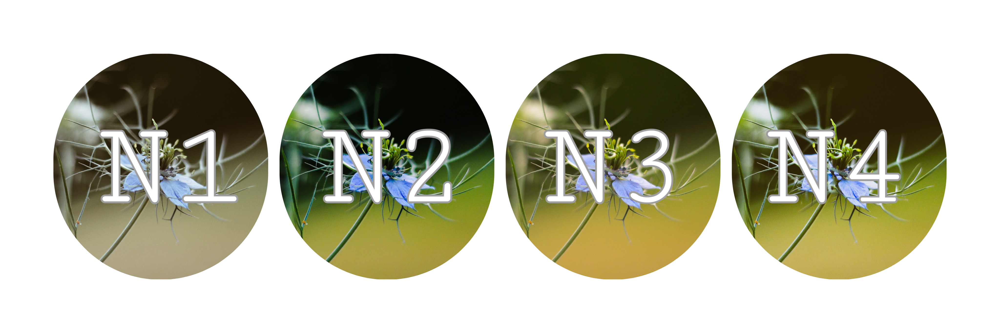

Free
FilterBasicLine
FilterBasicLine to prosty sposób na utrzymanie estetyki profilu. Produkt jest dedykowany tak naprawdę każdemu kto robi zdjęcia - smartfonem, lustrzanką, prostą cyfrówką - bez znaczenia. Jeśli zwracasz uwagę na wygląd swoich zdjęć - to coś dla Ciebie. Jest to nasz darmowy pakiet, który zawiera:
Wybierz pakietCity Filter Pack
Oryginal
Edytowane
Podkreślą miejski klimat Twoich fotografii. Wydobędą z architektury miasta to, co najlepsze, podkreślą każdy detal.
Zdjęcia robione w miejskim krajobrazie nigdy nie wyglądały tak dobrze.
Landscape Filter Pack
Oryginał
Edytowane
Nadaj swoim krajobrazom magii i wyrazu dzięki naszemu Landscape Filter Pack. Każdy fotograf wie,
jak trudno jest uchwycić mnogość i intensywność barw natury na zdjęciach.
Z FilterBasicLine nie ma nic prostszego!
Z naszym zestawem filtrów dedykowanych krajobrazom jedyne o co musisz się martwić to uchwycenie wymarzonego kadru – resztą zajmiemy się my!
Portrait Filter Pack
Oryginał
Edytowane
Dobry model to zaledwie połowa sukcesu. Portrait Filter Pack uwydatni w Twoich zdjęciach to, co najlepsze, a ewentualne mankamenty zatuszuje.
W naszych filtrach z serii portretowej zawsze będzie Ci do twarzy. Nie musisz się martwić o zbyt wysoką przysłonę
w warunkach intensywnego światła. Portrait Filter Pack to mistrz w tworzeniu efektu “bokeh” w tle zdjęcia.
$5/month
FilterProLine
FilterProLine to zestaw dedykowany klientom profesjonalnym. To szeroka gama filtrów do zdjęć, dopasowanych do wysublimowanych potrzeb klienta. Wspięliśmy się na szczyt naszych możliwości, by stworzyć filtry dostępne w ramach linii pro. Produkt spełni oczekiwania nawet najbardziej wymagających klientów. W pakiecie znajdują się:
- 55 filtrów z serii Landscape
- 50 filtrów z serii City
- 45 filtrów z serii Portrait
- 40 filtrów z serii Nature
- 35 filtrów z serii Food
Nature Filter Pack
Oryginał
Edytowane
Dla miłośników fotografii natury mamy specjalny pakiet filtrów. Nature Filter
Pack szczególnie spodoba się fanom makrofotografii -
eksponuje i podkreśla wszystkie barwy bez przerysowania, jednocześnie wyostrza pierwszy plan i rozmywa nieistotne szczegóły w tle.
Krótko mówiąc - poprawia wszystko to, czego nie uda Ci się przed naciśnięciem spustu migawki.

Food Filter Pack
Oryginał
Edytowane
Idealne dla restauratorów prowadzących swoje profile w social media. Dzięki przygotowanym przez nas filtrom, każda potrawa
wygląda jeszcze bardziej apetycznie – Instagram oraz Facebook staną się Twoim największym motorem napędzania klientów.
Tym zestawem nie pogardzą również blogerzy kulinarni.
$20/month
FilterAILine
Nasze filtry AI to najinteligentniejsze tego typu oprogramowanie na rynku. Filtry z tej linii produktów dopasowują ustawienia do zdjęcia według rozpoznanych na twarzy emocji oraz potrafią automatycznie usuwać niechcianych gości ze zdjęć.
- 55 filtrów z serii Landscape
- 50 filtrów z serii City
- 45 filtrów z serii Portrait
- 40 filtrów z serii Nature
- 35 filtrów z serii Food
- filtr rozpoznający emocje
- automatyczne usuwanie obiektów
Rozpoznawanie emocji
Oryginał

Radość
Filtry z tej linii produktów dopasowują kolory, świato, kontrast i wiele innych ustawień według rozpoznanych na twarzy emocji. Dzięki osiągnięciom sztucznej
inteligencji, możesz podkreślić energię płynącą z Twoich portretów za pomocą jednego kliknięcia, a całą resztą zajmie się nasze oprogramowanie.
Nasze oprogramowanie rozpoznaje takie emocje jak m.in: radość, smutek, złość i wiele innych.
Oryginał
Smutek
Usuwanie obiektów ze zdjęć
Oryginał
Edytowane
Nasze filtry AI to najinteligentniejsze tego typu oprogramowanie na rynku, które doskonale wie jak usunąć niechcianych gości z kadru.
Z ich pomocą usuniesz ze zdjęcia dowolny niepożądany obiekt tak, aby było to całkowicie niezauważalne. Już nigdy więcej nie będziesz musiał wycinać fragmentu zdjęcia
korzystając z programów graficznych lub usług profesjonalnego grafika. Zaufaj naszej zaawansowanej technologii.